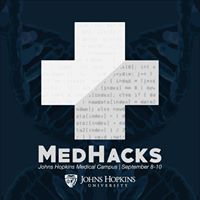

EXPERIENCE
 Signal
Signal
Incoming Product Management Intern
Summer 2018
Chicago, Illinois
Will be working closely with the product and engineering teams on the technical
development and launch of new features for Signal's platform.
Another future task will include collaborating with product analysts and managers to ensure user stories are written
to such detail that test plans can be generated.
Agile
Scrum
2018 (current)
Baltimore, Maryland
Helping develop a web application that will function similar to the mobile application in helping
people find roommates, but will be focused on and implemented specifically at the Johns Hopkins Campus.
Javascript
HTML/CSS
Firebase
Git

MedHacks
Back-End Developer
Back-End Developer
2018 (current)
Baltimore, Maryland
Created the application system on the organization's website for thousands of applicants.
Working on user login and registration, and building a
database to streamline the acceptance and travel reimbursement process.
Python
HTML/CSS
Javascript
Django
SQLite
Git
 Johns Hopkins University
Johns Hopkins University
Computer Science Research Assistant
Fall 2017
Baltimore, Maryland
Identified bugs within android mobile applications that cause disruptive app behavior, especially pertaining to wake locks.
Wrote analyzation reports of certain android applications detailing app utilities, source of bugs, and potential triggers.
Java
Android Studio
Summer 2017
Baltimore, Maryland
Redesigned and organized hundreds of faculty member bios in the website using the Terminal Four web management system.
Assisted in creation of new web pages and organization of online content to attract potential University donors.
TERMINALFOUR
All Technical Skills
fas;ldkfja;lsdkjf
Java
C/C++
Javascript
Python
HTML/CSS
Swift
XML
SQLite
Django
Firebase
Git
Valgrind
JUnit4
Bootstrap
Android Studio
Xcode
Linux
Agile
Scrum
TERMINALFOUR